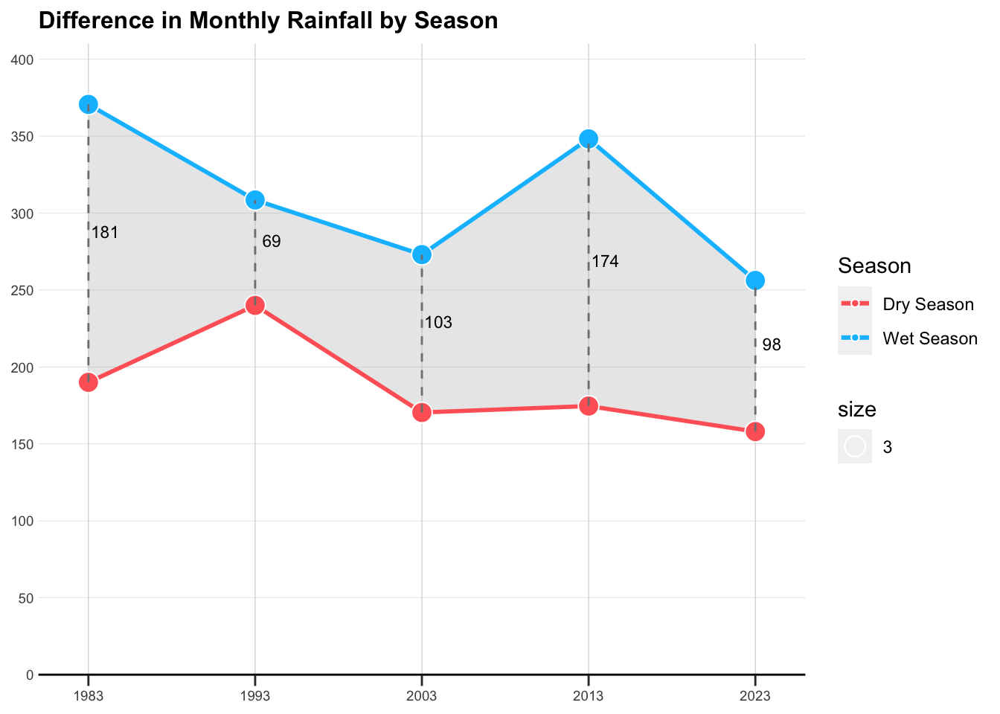
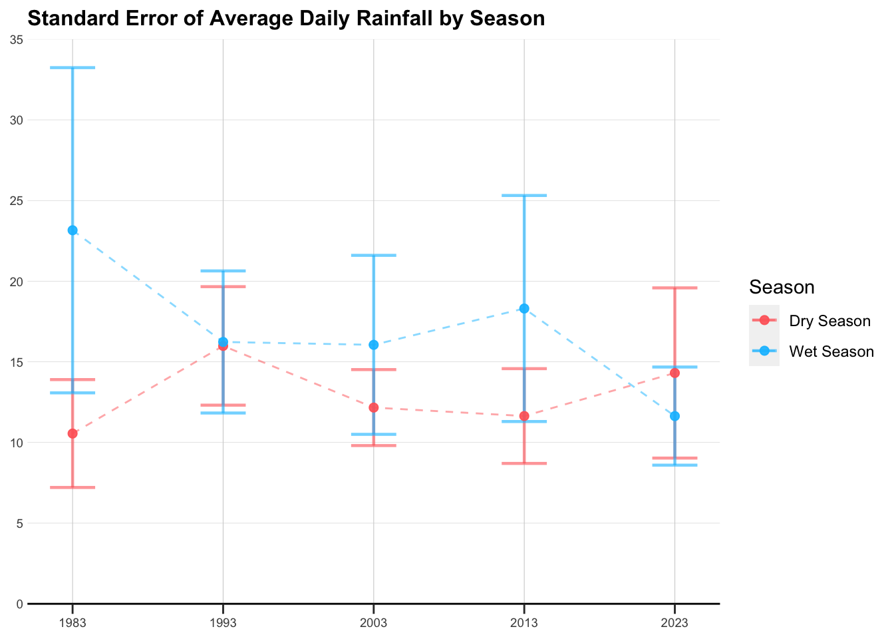
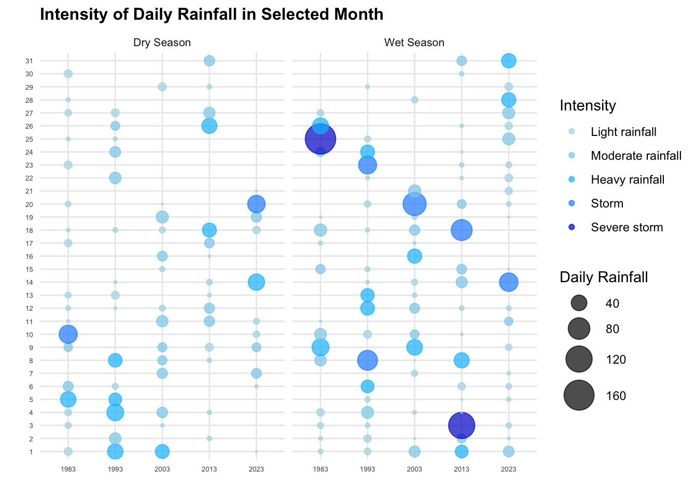

flowchart LR A(More Pronounced) --> B(Aespect of Contrast) B --> C(Intensity) B --> D(Frequency) B --> E(Volume) A --> F(Cause of Contrast) F --> G(Wetter Wet Season?) F --> H(Drier Dry Season?) F --> I(Both?) A --> J(Extend of Contrast)
Take-home Exercise 3
Introduction
Project Brief
According to an official report by Ministry of Suatainbility and the Environment as shown in the infographic below:
Daily mean temperature are projected to increase by 1.4 to 4.6, and
The contrast between the wet months (November to January) and dry month (February and June to September) is likely to be more pronounced.
This project will apply suitable interactive techniques to verify the assertions mentioned in the second portion, examining the pronounced contrast between the wet months (November to January) and the dry months (February, and June to September). The complete project brief is available here.
Analysis Framework
CLAIM
The contrast between the wet months (November to January) and dry month (February and June to September) is likely to be more pronounced.
Looking at the claim above, a few intriguing questions have popped up, sparking my curiosity:
- Definition of Contrast: What does ‘pronounced contrast’ mean in the context of seasonal rainfall? Is it related to the intensity, frequency, or total volume?
- Nature of Change: Which specific aspects of the wet and dry seasons are undergoing change? Are we observing wetter wet seasons, drier dry seasons, or a combination of both?
- Extend of Contrast: How much is more? To what extend is the contrast becoming more pronounced?
The diagram below illustrate the analysis framework based on the questions above, by making potential hypothesis on various factors which might contribute to the more pronounced contrast, to be further explored and investigated with data analytical work conducted in the later part.
Data Preparation
Data Selection
Historical daily rainfall records have been meticulously maintained and is accessible here. Changi station was strategically chosen for its status as the longest-serving climate station, boasting the most comprehensive dataset.
The climate maps below reveals a significant contrast in rainfall between December (indicated by the darkest blue) and February (represented by the lightest blue). However, February has fewer days. To facilitate a more straightforward analysis, data from July, a month with an equal number of days, will be used for comparison alongside December.

The data, consisting of historical daily temperature and rainfall records for every July and December from the years 1983, 1993, 2003, 2013, and 2023, has been downloaded from Historical Daily Records, in the format of 'DAILYDATA_S24_YYYYMM.csv'
Loading R packages
pacman::p_load(ggiraph, plotly,
patchwork, DT, tidyverse,
readxl, gifski, gapminder,
plotly, gganimate,networkD3,
ggtext, grid, ggnewscale,shadowtext) Importing Data
The code chunk below use read_csv to import datasets for July and December across various years, and decode the data using “ISO-8859-1” for all past data except 2023 data.
Code
jul_83 <- read_csv("data/DAILYDATA_S24_198307.csv", locale = locale(encoding = "ISO-8859-1"))
jul_93 <- read_csv("data/DAILYDATA_S24_199307.csv", locale = locale(encoding = "ISO-8859-1"))
jul_03 <- read_csv("data/DAILYDATA_S24_200307.csv", locale = locale(encoding = "ISO-8859-1"))
jul_13 <- read_csv("data/DAILYDATA_S24_201307.csv", locale = locale(encoding = "ISO-8859-1"))
jul_23 <- read_csv("data/DAILYDATA_S24_202307.csv")
dec_83 <- read_csv("data/DAILYDATA_S24_198312.csv", locale = locale(encoding = "ISO-8859-1"))
dec_93 <- read_csv("data/DAILYDATA_S24_199312.csv", locale = locale(encoding = "ISO-8859-1"))
dec_03 <- read_csv("data/DAILYDATA_S24_200312.csv", locale = locale(encoding = "ISO-8859-1"))
dec_13 <- read_csv("data/DAILYDATA_S24_201312.csv", locale = locale(encoding = "ISO-8859-1"))
dec_23 <- read_csv("data/DAILYDATA_S24_202312.csv")Merging and Selecting Dataframe
Upon examining the data, 2023 dataset had different naming conventions for some columns. The code chunk below rename and combine the dataset use rbind.
dec_23_rename <- dec_23 %>%
rename(`Highest 30 Min Rainfall (mm)` = `Highest 30 min Rainfall (mm)`,
`Highest 60 Min Rainfall (mm)` = `Highest 60 min Rainfall (mm)`,
`Highest 120 Min Rainfall (mm)` = `Highest 120 min Rainfall (mm)`)
jul_23_rename <- jul_23 %>%
rename(`Highest 30 Min Rainfall (mm)` = `Highest 30 min Rainfall (mm)`,
`Highest 60 Min Rainfall (mm)` = `Highest 60 min Rainfall (mm)`,
`Highest 120 Min Rainfall (mm)` = `Highest 120 min Rainfall (mm)`)
comb_data <- rbind(jul_83, dec_83, jul_93, dec_93, jul_03, dec_03, jul_13, dec_13, jul_23_rename, dec_23_rename)Summary Statistics
A quick summary statistic of the data frame is conducted as below
the code below use dim() to check the dataframe dimension
dim(rainfall)[1] 310 4The dataset comprises 310 observations, with 4 variables. 5 years of July and December Data, 31*5*2 = 310 days
str(rainfall)tibble [310 × 4] (S3: tbl_df/tbl/data.frame)
$ Year : num [1:310] 1983 1983 1983 1983 1983 ...
$ Month : num [1:310] 7 7 7 7 7 7 7 7 7 7 ...
$ Day : num [1:310] 1 2 3 4 5 6 7 8 9 10 ...
$ daily_rainfall: num [1:310] 8.7 0 5.3 6.2 39.5 14.9 0 0 10.5 55.5 ...The dataset presents’Year’, ‘Month’, and ‘Day’ information in separate columns. While this format is advantageous for certain types of grouping and categorization, combining into a datetime format can significantly facilitate time series analysis.
Code
rainfall <- rainfall %>%
mutate(date = as.Date(paste(Year, Month, Day, sep="-")))Displaying first 5 rows using head()
head(rainfall)# A tibble: 6 × 5
Year Month Day daily_rainfall date
<dbl> <dbl> <dbl> <dbl> <date>
1 1983 7 1 8.7 1983-07-01
2 1983 7 2 0 1983-07-02
3 1983 7 3 5.3 1983-07-03
4 1983 7 4 6.2 1983-07-04
5 1983 7 5 39.5 1983-07-05
6 1983 7 6 14.9 1983-07-06the code below use anyDuplicated() to check if any duplicated entries in the dataset.
anyDuplicated(rainfall)[1] 0the code use is.na() to check for total number of missing entries in the dataset.
sum(is.na(rainfall))[1] 0All observations are unique, and there is no missing data in the dataframe.
summary(rainfall) Year Month Day daily_rainfall
Min. :1983 Min. : 7.0 Min. : 1 Min. : 0.000
1st Qu.:1993 1st Qu.: 7.0 1st Qu.: 8 1st Qu.: 0.000
Median :2003 Median : 9.5 Median :16 Median : 0.600
Mean :2003 Mean : 9.5 Mean :16 Mean : 8.031
3rd Qu.:2013 3rd Qu.:12.0 3rd Qu.:24 3rd Qu.: 8.700
Max. :2023 Max. :12.0 Max. :31 Max. :164.400
date
Min. :1983-07-01
1st Qu.:1993-07-16
Median :2003-09-30
Mean :2003-09-30
3rd Qu.:2013-12-15
Max. :2023-12-31 Feature Engineering
create new col to define dry and wet season
rainfall <- rainfall %>%
mutate(
season = case_when(
Month == 7 ~ "Dry Season",
Month == 12 ~ "Wet Season"
)
)In order to undersatand the Frequency of rains, a new column is created to check if that day rains
According to Meteorological Service Singapore, A day is considered to have “rained” if the total rainfall for that day is 0.2mm or more
The code chunk below creates a new column to check the daily rainfall and decide if the day rains,
rainfall <- rainfall %>%
mutate(
if_rain = daily_rainfall > 0.2
)In this study, I analyze the distribution of daily rainfall volumes, as shown in histogram below. A notable observation from this graph is its rightward skew, indicating a concentration of days with lower rainfall volumes and fewer instances of high rainfall.
Code
filtered_rainfall <- rainfall %>% filter(if_rain == TRUE)
ggplot(filtered_rainfall, aes(x = daily_rainfall)) +
geom_histogram(bins = 20) +
theme_minimal() +
labs(y = "Number of Days", x = "Daily Rainfall (mm)") Understanding the severity of precipitation is crucial. Classification of daily rainfall intensity is crucial for our analysis. In this context, I adopt the classification standards set by the Chinese Meteorology Department used under this paper, which are as follows:
Less than 0.2 mm: Not rain
0.2-10 mm: Light rainfall
10-25 mm: Moderate rainfall
25-50 mm: Heavy rainfall
50-100 mm: Storm
100-250 mm: Severe storm
250 mm or more: Extreme storm
The code below use dplyr package to create a new column intensity.
Code
rainfall <- rainfall %>%
mutate(
Intensity = case_when(
daily_rainfall < 0.2 ~ "Not rain",
daily_rainfall >= 0.2 & daily_rainfall < 10 ~ "Light rainfall",
daily_rainfall >= 10 & daily_rainfall < 25 ~ "Moderate rainfall",
daily_rainfall >= 25 & daily_rainfall < 50 ~ "Heavy rainfall",
daily_rainfall >= 50 & daily_rainfall < 100 ~ "Storm",
daily_rainfall >= 100 & daily_rainfall < 250 ~ "Severe storm",
daily_rainfall >= 250 ~ "Extreme storm"
)
)Analysis
Total Volume of Rainfall
On the bigger picture, it is necessary to understand the total rainfall within the selected month between the dry and wet season across the years.
this drawing is inspired by the economist and this plot
Code
# Define the colors scheme
RED <- "#FF6666"
BLUE <- "#00BFFF"
# Group by to get monthly rainfall
total_rainfall <- rainfall %>%
group_by(Year, season) %>%
summarise(monthly_rainfall = sum(daily_rainfall), .groups = 'drop')
# Pivot table
pivot_season <- total_rainfall %>%
pivot_wider(
names_from = season,
values_from = monthly_rainfall,
values_fill = list(monthly_rainfall = 0)
)
# Create custom hover text for each season
pivot_season$hover_text_dry <- paste(pivot_season$Year, "Dry Season:", pivot_season$`Dry Season`)
pivot_season$hover_text_wet <- paste(pivot_season$Year, "Wet Season:", pivot_season$`Wet Season`)
pivot_season$diff_label <- paste(pivot_season$Year, "Difference:", round(pivot_season$`Wet Season` - pivot_season$`Dry Season`))
# draw 2 line plot with area shaded in between
plt1 <- ggplot(pivot_season, aes(x = Year)) +
geom_ribbon(aes(ymin = `Dry Season`, ymax = `Wet Season`), fill = "gray70", alpha = 0.3) +
geom_line(aes(y = `Dry Season`, color = "Dry Season"), size = 1) +
geom_line(aes(y = `Wet Season`, color = "Wet Season"), size = 1) +
geom_point(aes(y = `Dry Season`, fill = "Dry Season", text = hover_text_dry), size = 4, pch = 21, color = "white", stroke = 1) +
geom_point(aes(y = `Wet Season`, fill = "Wet Season", text = hover_text_wet), size = 4, pch = 21, color = "white", stroke = 1) +
scale_color_manual(values = c("Dry Season" = RED, "Wet Season" = BLUE),
name = "Season",
labels = c("Dry Season", "Wet Season")) +
scale_fill_manual(values = c("Dry Season" = RED, "Wet Season" = BLUE),
name = "Season",
labels = c("Dry Season", "Wet Season")) +
geom_segment(data = pivot_season, aes(x = Year,xend = Year,
y = `Dry Season`, yend = `Wet Season`),
linetype = "dashed", color = "grey50") +
geom_text(data = pivot_season, aes(x = Year + 1 , y = (`Dry Season` + `Wet Season`) / 2, label = round(`Wet Season` - `Dry Season`), text = diff_label),
vjust = -0.5, size = 3)
# adjust the layout
plt1 <- plt1 +
guides(color = guide_legend(title = "Season"), fill = guide_legend(title = "Season")) +
ggtitle("Difference in Monthly Rainfall by Season") +
scale_x_continuous(
limits = c(1980, 2026),
expand = c(0, 0),
breaks = c(1983, 1993, 2003, 2013, 2023),
labels = c("1983", "1993", "2003", "2013", '2023')
) +
scale_y_continuous(
limits = c(0, 410),
breaks = seq(0, 400, by = 50),
expand = c(0, 0)
) +
theme(
panel.background = element_rect(fill = "white"),
panel.grid = element_blank(),
panel.grid.major.x = element_line(color = "#D3D3D3", linetype = "solid", size = 0.2),
panel.grid.major.y = element_line(color = "#D3D3D3", size = 0.1),
axis.ticks.length.y = unit(0, "mm"),
axis.ticks.length.x = unit(2, "mm"),
axis.title = element_blank(),
axis.line.x.bottom = element_line(color = "black"),
axis.text.y = element_text(size = 7),
axis.text.x = element_text(size = 7),
plot.title = element_text(size = 12, face = "bold")
)
plt1
Average Volume of Rainfall
Focusing on the days with precipitation, what are the mean and standard deviation of daily rainfall? To illustrate this, an error bar graph is utilized to represent these statistical measures.
Code
# filter only rainy days
filtered_rainfall <- rainfall %>%
filter(if_rain == TRUE)
# Assuming 'filtered_rainfall' is your dataframe
rainfall_summary <- filtered_rainfall %>%
group_by(Year, season) %>%
summarise(
mean_rainfall = mean(daily_rainfall),
se_rainfall = sd(daily_rainfall) / sqrt(n()),
.groups = 'drop'
)
# Create the plot
plt2 <- ggplot(rainfall_summary, aes(x = Year, y = mean_rainfall, color = season)) +
geom_line(size = 0.5, alpha = 0.5, linetype = "dashed") +
geom_errorbar(
aes(ymin = mean_rainfall - se_rainfall, ymax = mean_rainfall + se_rainfall),
width = 3,
alpha = 0.6,
size = 0.8
) +
geom_point(
aes(),
size = 2,
alpha = 0.9
) +
scale_color_manual(values = c("Dry Season" = "#FF6666", "Wet Season" = "#00BFFF")) +
ggtitle("Standard Error of Average Daily Rainfall by Season") +
xlab("Year") +
ylab("Average Daily Rainfall")
# adjust the layout
plt2 <- plt2 +
guides(color = guide_legend(title = "Season"), fill = guide_legend(title = "Season")) +
scale_x_continuous(
limits = c(1980, 2026),
expand = c(0, 0),
breaks = c(1983, 1993, 2003, 2013, 2023),
labels = c("1983", "1993", "2003", "2013", '2023')
) +
scale_y_continuous(
limits = c(0, 35),
breaks = seq(0, 35, by = 5),
expand = c(0, 0)
) +
theme(
panel.background = element_rect(fill = "white"),
panel.grid = element_blank(),
panel.grid.major.x = element_line(color = "#D3D3D3", linetype = "solid", size = 0.2),
panel.grid.major.y = element_line(color = "#D3D3D3", size = 0.1),
axis.ticks.length.y = unit(0, "mm"),
axis.ticks.length.x = unit(2, "mm"),
axis.title = element_blank(),
axis.line.x.bottom = element_line(color = "black"),
axis.text.y = element_text(size = 7),
axis.text.x = element_text(size = 7),
plot.title = element_text(size = 12, face = "bold")
)
plt2
Frequency of Rainfall
Further, it’s important to gauge the frequency of rainfall and its corresponding intensity. This aspect looks into how often it rains and the typical severity of these rainfall events.
Code
# set the order
rainfall$Intensity <- factor(rainfall$Intensity, levels = c("Not rain",
"Light rainfall",
"Moderate rainfall",
"Heavy rainfall",
"Storm",
"Severe storm",
"Extreme storm"))
# get summary data
rainfall_summary <- rainfall %>%
group_by(Year, season, Intensity) %>%
summarise(days_count = n(), .groups = 'drop')
# set color scale
color_scale <- scale_fill_manual(values = c("Not rain" = "grey",
"Light rainfall" = "#ADD8E6",
"Moderate rainfall" = "#87CEEB",
"Heavy rainfall" = "#00BFFF",
"Storm" = "#1E90FF",
"Severe storm" = "#0000CD",
"Extreme storm" = "dark blue"))
# Plot as a stacked bar chart
plt3 <- ggplot(rainfall_summary, aes(x = factor(Year), y = days_count, fill = Intensity)) +
geom_bar(stat = "identity", position = "stack") +
geom_text(aes(label = days_count), position = position_stack(vjust = 0.5), color = "white", size = 2.5) + # Add white labels
facet_wrap(~season) +
labs(
title = "Frequency of Rainfall Intensity in Selected Month",
x = "",
y = "Number of Days"
) +
theme_minimal() +
theme(
axis.title = element_text(face = "bold"),
axis.text.y = element_text(size = 7),
axis.text.x = element_text(size = 7),
plot.title = element_text(size = 12, face = "bold")
) +
color_scale
plt3Intensity of Rainfall
Delving deeper, I analyze the distribution and intensity of daily rainfall. This granular view provides insight into the daily variations and characteristics of rainfall, offering a detailed perspective on its intensity and distribution patterns.
Code
# set the color scale for daily rainfall based on intensity
color_scale <- scale_color_manual(values = c("Not rain" = "white",
"Light rainfall" = "#ADD8E6",
"Moderate rainfall" = "#87CEEB",
"Heavy rainfall" = "#00BFFF",
"Storm" = "#1E90FF",
"Severe storm" = "#0000CD",
"Extreme storm" = "dark blue"),
breaks = c("Not rain", "Light rainfall", "Moderate rainfall",
"Heavy rainfall", "Storm", "Severe storm", "Extreme storm"))
# filter only rainy days
filtered_rainfall <- rainfall %>%
filter(if_rain == TRUE)
filtered_rainfall$Year <- as.character(filtered_rainfall$Year)
filtered_rainfall$Day <- as.character(filtered_rainfall$Day)
# plot a scatter diagram
plt4 <- ggplot(filtered_rainfall, aes(x=Year, y=Day, size = daily_rainfall, color = Intensity)) +
geom_point(alpha=0.7) +
scale_size_continuous(range = c(0.1, 10), name = "Daily Rainfall") +
facet_wrap(~season) +
color_scale +
guides(color = guide_legend(order = 1)) +
theme_minimal() +
labs(
title = "Intensity of Daily Rainfall in Selected Month",
y = "",
x = ""
) +
theme(
axis.text.y = element_text(size = 7),
axis.text.x = element_text(size = 7),
plot.title = element_text(size = 12, face = "bold")
)
plt4
Analysis Dashboard
Static Dashboard
Code
patchwork <- (plt1 | plt3) / (plt2 | plt4)
patchwork +
plot_annotation(title = "Volumn, Frequency, Intensity of Rainfall Comparasion in Selected Months")
Insights
Volume
Regarding the total volume of monthly rainfall, both dry and wet seasons appear to have decreased from 1983 to 2023. There is no clear pattern in the difference between the two seasons in the selected data.
Interestingly, when examining the average daily rainfall for rainy days, the wet season’s average gradually declines over time, while the dry season’s average actually increases. Specifically, in 2023, the mean daily rainfall for the dry season is higher than that of the wet season. The standard error for the wet season diminishes over time, indicating more consistent rainfall amounts, whereas it increases for the dry season, suggesting greater variability. This inconsistency in the dry season, with larger mean values, might be attributed to anomalies, as can also be inferred from the chart at the bottom right.
When analyzing the two charts in parallel, the wet season exhibits higher total monthly rainfall but lower average rainfall on rainy days as we approach 2023. This suggests a more frequent, yet lighter, rainfall pattern in the wet season, supported by the higher proportion of blue in the bottom left chart and smaller blue bubbles in the wet season on the right chart. In contrast, the dry season demonstrates a more irregular rainfall pattern. Despite more non-rainy days and lower total monthly rainfall, the average rainfall actually increases.
Frequency
The number of rainy days from 1983 to 2023 increases in the wet season and decreases in the dry season. Considering the frequency of rainy days, there is a more pronounced contrast between the wet and dry seasons over the years in the selected data. However, the occurrence of heavier rains (indicated by darker colors) varies over time.
Intensity
In terms of rainfall intensity, earlier years seem to have experienced more extreme rainfall. The bottom chart shows more dots (rainy days) for the wet season in 2023 compared to earlier years, and fewer dots for the dry season. However, the intensity of rainfall, especially heavy rainfall, has decreased.
As the static charts only shows an overall trends, it would be more interesting to interactively filter and select based on the rainy patterns, to understand and dive into the overall rainy behaviors between dry and wet season across the years.
Interactive Dashboard
Code
plt1_int <- ggplotly(plt1, tooltip = "text")
#plt1_intCode
plt2_int <- ggplotly(plt2) %>%
layout(showlegend = FALSE)
# plt2_intCode
# get pivot table
rainfall_pivot <- rainfall_summary %>%
pivot_wider(names_from = Intensity, values_from = days_count, values_fill = list(days_count = 0))
# Convert Year to factor
rainfall_pivot$Year <- as.factor(rainfall_pivot$Year)
# Define the color scale
colors <- c("Not rain" = "grey",
"Light rainfall" = "#ADD8E6",
"Moderate rainfall" = "#87CEEB",
"Heavy rainfall" = "#00BFFF",
"Storm" = "#1E90FF",
"Severe storm" = "#0000CD",
"Extreme storm" = "dark blue")
# Create individual plots for wet season with trace
plot_wet <- plot_ly(data = filter(rainfall_pivot, season == "Wet Season"),
x = ~Year, type = 'bar',
y = ~`Severe storm`, name = 'Severe storm', marker = list(color = colors["Severe storm"]),
legendgroup = "Severe storm",showlegend = FALSE
) %>%
add_trace(y = ~Storm, name = 'Storm', marker = list(color = colors["Storm"]),
legendgroup = "Storm",showlegend = FALSE) %>%
add_trace(y = ~`Heavy rainfall`, name = 'Heavy rainfall', marker = list(color = colors["Heavy rainfall"]),
legendgroup = "Heavy rainfall",showlegend = FALSE) %>%
add_trace(y = ~`Moderate rainfall`, name = 'Moderate rainfall', marker = list(color = colors["Moderate rainfall"]),
legendgroup = "Moderate rainfall",showlegend = FALSE) %>%
add_trace(y = ~`Light rainfall`,name = 'Light rainfall',marker = list(color = colors["Light rainfall"]),
legendgroup = "Light rainfall") %>%
add_trace(y = ~`Not rain`, name = 'Not rain', marker = list(color = colors["Not rain"]),
legendgroup = "Not rain",showlegend = FALSE) %>%
layout(yaxis = list(title = 'Number of Days'), barmode = 'stack',showlegend = FALSE)
# Create individual plots for dry season with trace
plot_dry <- plot_ly(data = filter(rainfall_pivot, season == "Dry Season"),
x = ~Year, type = 'bar',
y = ~`Severe storm`, name = 'Severe storm', marker = list(color = colors["Severe storm"]),
legendgroup = "Severe storm", showlegend = FALSE
) %>%
add_trace(y = ~Storm, name = 'Storm', marker = list(color = colors["Storm"]),
legendgroup = "Storm", showlegend = FALSE) %>%
add_trace(y = ~`Heavy rainfall`, name = 'Heavy rainfall', marker = list(color = colors["Heavy rainfall"]),
legendgroup = "Heavy rainfall", showlegend = FALSE) %>%
add_trace(y = ~`Moderate rainfall`, name = 'Moderate rainfall', marker = list(color = colors["Moderate rainfall"]),
legendgroup = "Moderate rainfall") %>%
add_trace(y = ~`Light rainfall`,name = 'Light rainfall',marker = list(color = colors["Light rainfall"]),
legendgroup = "Light rainfall", showlegend = FALSE) %>%
add_trace(y = ~`Not rain`, name = 'Not rain', marker = list(color = colors["Not rain"]),
legendgroup = "Not rain", showlegend = FALSE) %>%
layout(yaxis = list(title = 'Number of Days'),
barmode = 'stack',
showlegend = FALSE)
# Combine the plots using subplot
plt_bar <- subplot(plot_dry, plot_wet, nrows = 1, shareX = TRUE, shareY = TRUE, titleX = FALSE, titleY = TRUE) %>%
layout(
annotations = list(
list(
text = "Dry Season",
x = 0.07, xref = "paper", y = 0.98, yref = "paper",
showarrow = FALSE, xanchor = "center", yanchor = "bottom"
),
list(
text = "Wet Season", #
x = 0.59, xref = "paper", y = 0.98, yref = "paper",
showarrow = FALSE, xanchor = "center", yanchor = "bottom"
)
)
)
plt3_int <- plt_bar %>%
layout(showlegend = FALSE)
# plt3_intCode
plt4_int <- ggplotly(plt4)
# plt4_intCode
plt <- subplot(plt1_int, plt3_int, plt2_int, plt4_int, nrows = 2, shareX = TRUE, shareY = FALSE, titleX = FALSE, titleY = FALSE)
# Adjusting layout
plt <- plt %>% layout(
title = "Volume, Frequency, Intensity of Rainfall Comparison in Selected Months",
showlegend = TRUE,
font = list(size = 8),
margin = list(l = 50, r = 50, b = 50, t = 100, pad = 4),
legend = list(font = list(size = 8)),
uniformtext = list(minsize = 8, mode = 'hide')
)
pltConclusion
CLAIM
The contrast between the wet months (November to January) and dry month (February and June to September) is likely to be more pronounced.
Upon the analysis based on the selected data
Total Volume of Monthly Rainfall: There is no strong evidence of significant differences in the total volume of monthly rainfall between the wet and dry seasons across the years.
Frequency of Rainy Days: The frequency of rainy days shows a more pronounced contrast between the wet and dry seasons over the years in the selected data. This indicates a distinct pattern in the occurrence of rainfall throughout the year.
Intensity of Rainfall: While the occurrence of rainfall events, indicated by blue colors, shows improvement over time, the overall intensity of rainfall, especially heavy rainfall, has displayed a decreasing trend. This trend hints at a potential shift in precipitation patterns or intensity over the years.
Overall, while the total volume of monthly rainfall may not demonstrate significant differences between wet and dry seasons, the frequency of rainfall events appears to be more pronounced. However, the contrast in intensity seems to be less significant. It’s important to note that the analysis is based on data from a single station over a 5-year interval, limited to specific months. Therefore, to draw more accurate conclusions, additional data from a broader range of locations and time periods would be necessary.
Reference
https://stackoverflow.com/questions/49258027/plotly-r-legend-with-groupnames